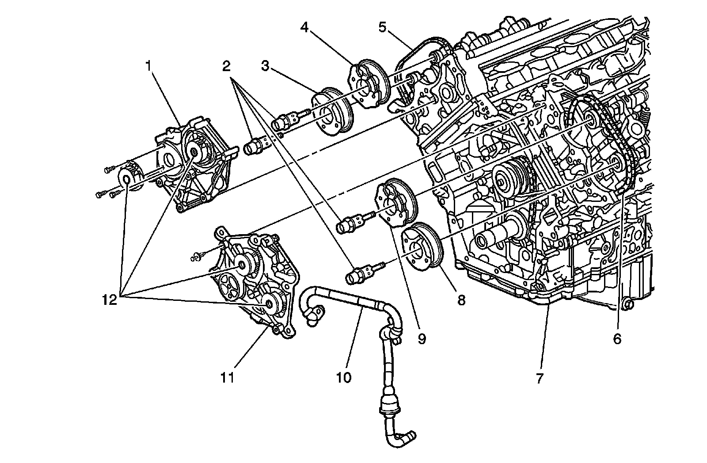

Variable Valve Timing Actuator: Description and Operation
Camshaft Actuator System Description
The camshaft position (CMP) actuator system is used for a variety of engine performance enhancements. The CMP actuator system accomplishes this by controlling the amount of intake and exhaust valve overlap. These enhancements include the following:
* Lower emission output through exhaust gas recirculation (EGR) control
* A wider engine torque range
* Improved gas mileage
* Improved engine idle stability
The CMP actuator system is comprised of the following components:
* Four CMP actuator solenoids
* Four oil control valves
* Four vane style CMP actuators
* Four CMP sensors
The CMP actuator system requires a very complex electrical signal from the engine control module (ECM) in order to control the position of the CMP actuators. The electrical signal requires use of an un-fixed pulse width modulation (PWM) signal as well as 2 different operating frequencies of 150 and 500 Hz. Changes in the PWM can happen every 100 milliseconds and thus makes it difficult to measure the correct PWM or frequency with a DMM during CMP actuator control. At idle, the ECM commands a consistent 7 percent duty cycle at 150 Hz. The ECM uses this signal in order to sense certain circuit failures.
Camshaft Actuator Components

1 - Camshaft Position (CMP) Actuator Housing Bank 1 (Right)
2 - Camshaft Position (CMP) Actuator Oil Control Valves
3 - Camshaft Position (CMP) Actuator Bank 1 (Right) Exhaust
4 - Camshaft Position (CMP) Actuator Bank 1 (Right) Intake
5 - Secondary Timing Drive Chain Bank 1 (Right)
6 - Secondary Timing Drive Chain Bank 2 (Left)
7 - Engine Block
8 - Camshaft Position (CMP) Actuator Bank 2 (Left) Exhaust
9 - Camshaft Position (CMP) Actuator Bank 2 (Left) Intake
10 - Oil Outlet Tube
11 - Camshaft Position (CMP) Actuator Housing Bank 2 (Left)
12 - Camshaft Position (CMP) Actuator Solenoids
The CMP actuator solenoids, or electromagnets, are located on the front of the engine and are mounted to their corresponding bank CMP actuator housing.
The oil control valves are threaded, and attach the CMP actuators to the front of the camshafts. The oil control valve meters the oil flow to the CMP actuator through the advancing and retarding oil ports. With no command fro the ECM, all of the oil is ported to the advancing chambers of the exhaust CMP actuators and to the retarding chambers of the intake CMP actuators. With full command from the ECM, all of the oil is ported to the retarding chambers of the exhaust CMP actuators and to the advancing chambers of the intake CMP actuators. When the intake or exhaust camshafts reach a desired position, above 0 degrees on the scan tool, the ECM will apply an electrical signal to the solenoids in order to hold the CMP actuators in the desired position. The oil control valves will port engine oil evenly to the advancing and retarding chambers of the CMP actuators in order to hold the camshafts in the desired position. The oil control valves will allow enough engine oil to flow to compensate for any leakage past the CMP actuators in order to hold the camshafts in a steady position.
The CMP actuators interface the timing chain to the camshafts, and are able to change the camshaft timing in relation to the crankshaft. The intake CMP actuators have the ability to move the intake camshafts a total of 40 degrees from the parked position. The exhaust CMP actuators have the ability to move the exhaust camshafts a total of 50 degrees from the parked position. With the engine OFF or with the CMP actuators not commanded, the exhaust CMP actuators are parked at the full advance position of 133 degrees ATDC and the intake CMP actuators are parked at the full retard position of 117 degrees before top dead center (BTDC). The CMP Angle parameters on the scan tool will indicate 0 degrees with the engine running and the CMP actuators in the parked position for both exhaust and intake camshafts.
A locking pin keeps the CMP actuators in the parked position in order to avoid valve train noise upon engine start-up. The locking pin will release the actuator after the engine oil pressure is sufficient to overcome the locking pin spring pressure. The exhaust CMP actuators have return springs. The return springs are necessary to assist the CMP actuators to return to the parked position due to the rotational inertia of the valve train components upon engine shutdown.
An oil outlet tube is used to transfer oil from a dedicated oil galley in the engine block, from the replaceable oil filter, up to each head and is located in the timing chain area. The oil outlet tube incorporates a non-replaceable 40 micron oil filter. If the filter becomes clogged with contamination and can not be cleaned, the tube and filter must be replaced as an assembly. Engine oil pressure, level, viscosity, and temperature can have an adverse affect on the CMP actuator performance.
The CMP sensors are used by the ECM to monitor the position of the camshafts. The intake cam sensor wheels have 4X targets. The exhaust cam sensor wheels have a 4X target. The ECM can detect a camshaft position variance as small as 4 degrees. The variance is the difference between the actual camshaft position and the desired camshaft position. A CMP actuator performance DTC will set if the ECM detects the camshaft position has a 4 degree to 11 degree variance. A 4 degree variance takes more time for the ECM to detect than an 11 degree variance. A crankshaft to camshaft correlation DTC will set if the ECM detects a 12 degree variance or more.
If a CMP actuator system DTC is present, the ECM will disable the CMP actuator system control for that ignition cycle.
CMP Actuator System Operation
The engine control module (ECM) sends an electrical signal to the camshaft position (CMP) actuator solenoids through the control circuits when a camshaft timing change is desired. The ground circuit of the CMP actuator solenoid is used as a return. The CMP actuator solenoid uses electromagnetic force to pull on the plunger of the oil control valve . The oil control valve will port the pressurized engine oil to either the advancing or retarding chambers of the CMP actuator. The CMP actuator, in turn, changes the camshaft position relative to crankshaft position. The ECM uses the CMP sensors to determine the position of the camshafts.
The ECM calculates the optimum CMP through the following inputs:
* Engine speed
* Throttle position indicated angle
* Crankshaft position (CKP)
* CMP
* Engine load
* Barometric pressure (BARO)
* Intake air temperature (IAT)
The ECM monitors the following inputs before assuming control of the CMP actuator system:
* Engine coolant temperature (ECT)
* Loop status
* Calculated engine oil temperature (EOT)
* Engine oil pressure (EOP)
* Engine oil level
* Crankshaft/camshaft correlation
* Ignition 1 signal voltage
* Barometric pressure (BARO)